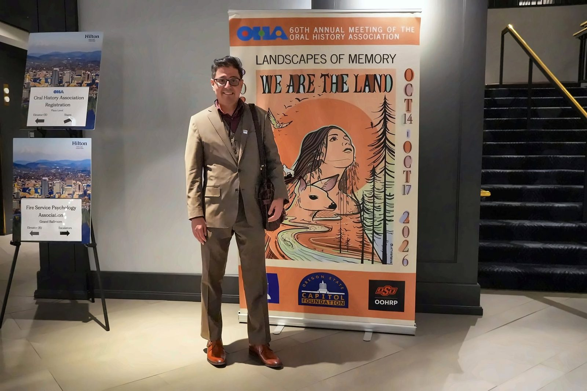
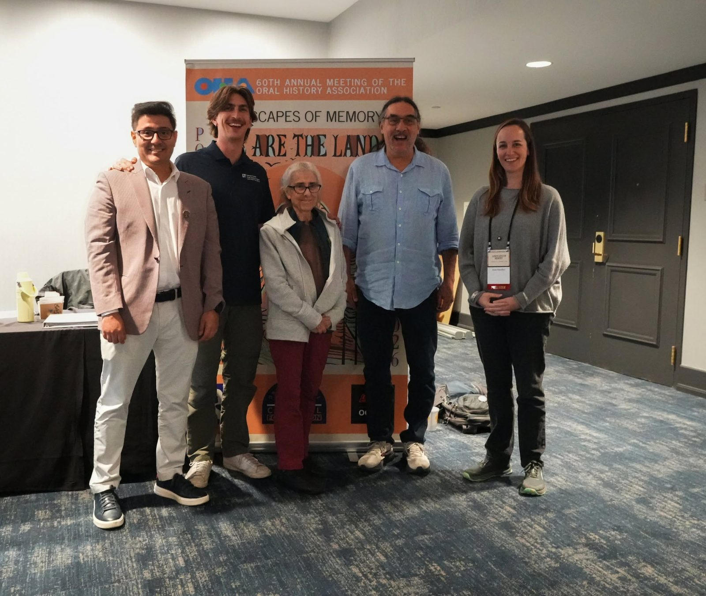
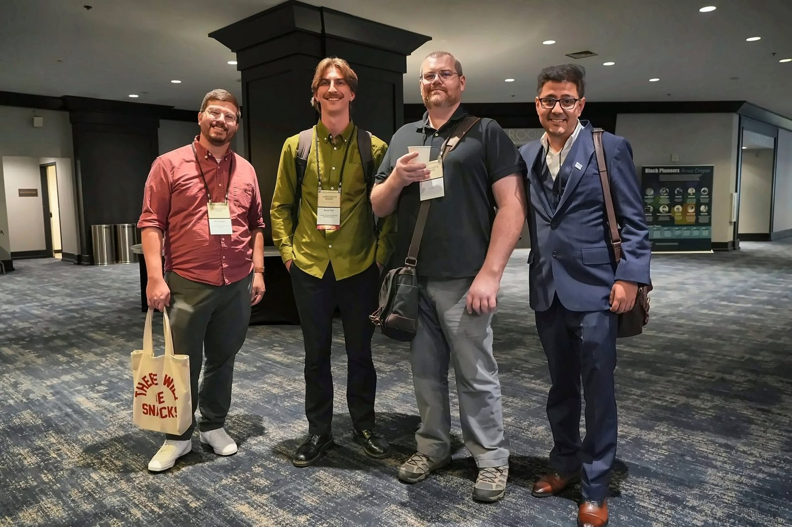

Oral History Association Annual Meeting
I presented twice at the Oral History Association’s 60th Annual Meeting, “Landscapes of Memory,” in Portland. The first was a roundtable on the Underground Railroad Oral History Project with Deborah Hendrix, Ronan Hart, and colleagues from UF’s Samuel Proctor Oral History Program and Center for African Studies. I spent years at SPOHP recording interviews with descendants of freedom seekers, and sitting at the table with that group again, seeing how much the project has grown, felt a little like coming home.
My second presentation, “From Crisis to Care: Community Interviews on Worker Centers and Collective Power,” followed worker centers and collective power in Tompkins County from the 1980s to today. It brought my thesis research into conversation with oral history, asking what workers’ own accounts of care, struggle, and solidarity add to how we understand organizing. Between sessions I caught up with colleagues from UF, Virginia Tech, and Oklahoma State.




OHA meets in Chicago, my hometown, in 2027. I’d like to bring a panel on labor, oral history, and organizing. If you’d like to be part of that conversation, send me a note.